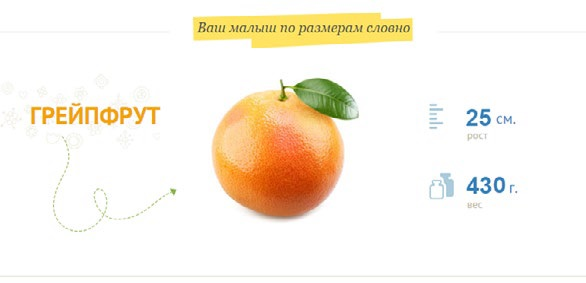
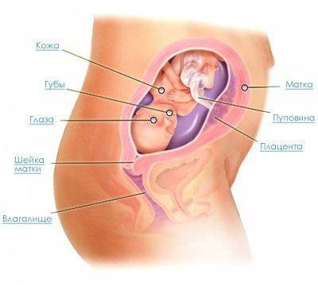

21 неделя беременности

21 неделя беременности является долгожданной для любой беременной женщины, поскольку именно на этом сроке (начиная с этого срока) проводят второе плановое УЗИ. Врач может сказать точный размер ожидаемого малыша, как функционируют его внутренние органы и какое состояние плаценты. Ну а самое главное – уже можно узнать пол ребенка.
Ваш малыш теперь выглядит фактически таким, каким он будет при рождении, только в уменьшенном размере. К 21 неделе беременности размер плода достиг примерно половины своего роста при рождении. Но весит он в разы меньше, нежели будет весить в день своего появления на свет.
Для плода 21 неделя беременности – это период, когда его развитие происходит очень быстрыми темпами. На этом этапе беременности у малыша уже очень хорошо развита нервная система. Он уже без труда может глотать околоплодную жидкость. Кровь малыша уже содержит достаточное количество кровяных клеток, а развивающиеся белые кровяные клетки будут подавлять у малыша различные инфекции.
Еще одной особенностью развития плода на 21 неделе беременности – формирование вкусовых сосочков на языке, а пищеварение уже развито настолько, что может отделять от околоплодной жидкости воду и сахар.
Глазки малыша еще спрятаны за веками. Шевеления на 21 неделе особенно активны. Малыш то и дело меняет свою позу внутри матки. Если у вас двойня, их движения могут напоминать разучивание первого в их жизни танца.
На голове малыша продолжают расти волосы, у него полностью сформированы черты лица. Для того, чтобы услышать сердцебиение малыша, ультразвука не нужно, теперь достаточно стетоскопа, чтобы уловить ритмичное биение.
Эндокринные железы малыша уже работают, на 21 неделе на «подмогу» к ним придёт и селезенка. Кроха может быть очень активным по ночам, чтобы помочь ему заснуть, можно просто нежно погладить живот и даже спеть колыбельную. Детки уже реагируют на голос мамы и её настроение.
Ваш организм
Осталось всего 19 недель до того, как вы встретитесь со своим малышом. Ваш живот гораздо заметнее сейчас, и одежда для беременных (по крайней мере штаны) – это ваш новый модный аксессуар. К вам вернулся аппетит (если он пропадал во время токсикоза) и, возможно, даже стал слегка сильнее.
Именно сейчас женщина начинает активно прибавлять в весе. Это будет продолжаться примерно на протяжении 9 недель. Причина вся в том, что у ребеночка в этой фазе активно формируется жировая ткань.
Иногда мамочке на этом этапе хочется чего-то такого, чего она никогда не пробовала.
Сексуальное влечение возвращается к вам, что является нормальным во втором триместре. Вам придется немного изощрится, чтобы найти удобную позу, но секс для вас безопасен, если только врач не велел вам воздержаться.
Колебания настроения, вероятно, у вас сошли на нет, и если сейчас вы чувствуете себя вполне свыкшейся со своей беременностью. Из-за увеличенного объема крови вы, вероятно, чувствуете повышенное тепло во всем теле, но обильное питье поможет вам отрегулировать свое самочувствие.
С физиологической точки зрения дно матки у женщины постепенно поднимается. Самый верхний ее край располагается на расстоянии 1,2 см выше пупка.
Сейчас организм ребеночка требует как можно больше кальция для своего роста и развития. Именно поэтому, если в организме женщины будет его недостаточно, она рискует очень сильно испортить свои зубы, а как следствие – костную ткань своего ребенка.
В случае недостатка кальция, ощущения на 21 неделе беременности будут испорчены, поскольку у будущей мамы могут возникнуть судороги в ногах, а еще хуже – варикозное расширение вен. Это происходит потому, что дно матки расположено уже слишком высоко над лоном, и она буквально сдавливает крупные вены. В результате кровь застаивается в венах и начинается их расширение.
Здоровые советы
Чтобы восполнить нехватку кальция и избежать проблем с венами, следует принимать кальций в таблетках и употреблять продукты, богатые кальцием. Также, чтобы не возникло проблем с венами, нужно руководствоваться рядом правил:
Не стоит носить обувь на высоком каблуке, про нее вообще лучше забыть минимум на полгода. Вместо это, следует носить обувь с подошвой не выше 1-2 см, а дома и вовсе, ходить босиком.
Во время отдыха не стоит лежать на спине. Свою привычную позу нужно поменять на бок.
Также полезно 3 раза в день по 15 минут лежать с поднятыми ногами вверх, так как это заметно улучшает отток крови. Эластичные бинты также придутся в помощь беременной женщине. Как правило, врачи рекомендуют бинтовать ноги при первых признаках расширения вен. Но если делать это для профилактики – хуже не будет. Этот бинт можно приобрести в аптеке, разрезать его не следует. Бинтовать следует по утрам: от ступни и до середины бедренной кости. Нога не должна быть сильно затянутой, но плотный обхват обязательно нужно достичь.
В случае, если болит живот на 21 неделе беременности или появляются судороги в ногах, следует обязательно сказать об этом своему лечащему врачу.
Продолжайте пить больше воды и, если страдаете от изжоги, избегайте жирной пищи и больших порций. Малые порции и закуски предпочтительны, т.к. занимают меньше места в теперь уже тесном желудке.
Женщина всё больше ощущает себя мамочкой, ведь своего малыша она чувствует буквально. Помните и о том, что процесс воспитания уже пора начинать: разговаривать с «пузожителем» можно и сейчас. Даже нужно! Непременно нежно, спокойно, с теплом и любовью обращайтесь к подрастающему человечку – он всё чувствует.
Впервые будущую маму может застигнуть врасплох вопрос, связанный с интимной жизнью. Приходится приспосабливаться к своим новым формам, что получается не сразу. Не отчаивайтесь, не отказывайтесь от близости с мужем (если не болит живот и врач разрешает, конечно). Терпение и внимание помогут вам преодолеть этот деликатный момент.
Внутриутробное развитие плода на 21 неделе беременности
Бандаж и колготки для беременных
Бандаж позволит вам избежать и возникновения растяжек, и неприятных болей из-за натяжения связок, поддерживающих матку. Особенно необходимо приспособление беременной, в животе которой обосновалась двойня.
Бандаж
- поддерживает живот и смягчает нагрузку на позвоночник;
- фиксирует плод в матке в вертикальном положении, способствует правильному положению плода (головкой вниз);
- позволяет женщине чувствовать себя более комфортно в положении стоя и при ходьбе;
- предотвращает преждевременное опускание живота, предупреждает образование растяжек.
Бандаж может быть различной формы:
- Бандаж-трусики с эластичной поддерживающей вставкой спереди над животом: надевается как трусы, но неудобен тем, что ежедневное ношение невозможно или затруднено, поскольку каждый день такой бандаж нужно стирать.
- Бандаж-пояс надевается на нижнее белье. Он имеет вид эластичной ленты, которая поддерживает живот и предупреждает появление растяжек. Очень удобен в использовании, специальные клапаны по бокам позволяют регулировать размер и плотность облегания.
- Бандаж-корсет считается пережитком прошлого – очень непрактичный.
- Комбинированный бандаж используются как до, так и после родов. Он также сделан в виде пояса – из прорезиненной ткани, которая тянется. Застегивается такой бандаж на липучках: во время беременности широкая часть укрепляет спину, а узкая поддерживает живот. После родов пояс застегивается наоборот – узкой частью назад, а широкая в это время затягивает живот.
Правила ношения бандажа
Нельзя носить бандаж беспрерывно, тем более спать в нем. Рекомендуется делать 30-40-минутный перерыв после каждых 3 часов ношения. Однако если бандаж вам прописали по серьезным показаниям и он вам просто идеально подходит (вы ощущаете заметное облегчение и комфорт), то перерывы делать не нужно.
Бандаж не должен сдавливать брюшную полость – только поддерживать живот. Никаких дискомфортных ощущений женщина испытывать не должна (независимо от принимаемой позиции или телодвижений) – только облегчение.
Целесообразно носить бандаж до самого конца беременности. Но ориентироваться следует на свои ощущения и показания.
Если врач не запрещает, и вы приняли решение носить бандаж – не переживайте. При правильном надевании, ношении и использовании он не представляет абсолютно никакой опасности ни для вас, ни для малыша.
Помимо бандажа беременным женщинам пригодятся и специальные колготки для беременных – существуют особые лечебные модели, которые снимают отеки ног, останавливают развитие варикоза, а также снижают нагрузку на сердечную мышцу.
20 неделя 22 неделя